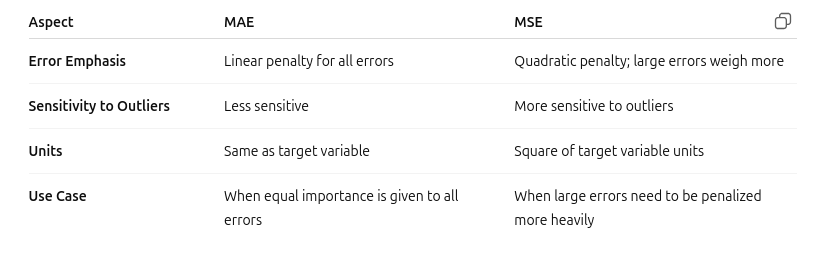
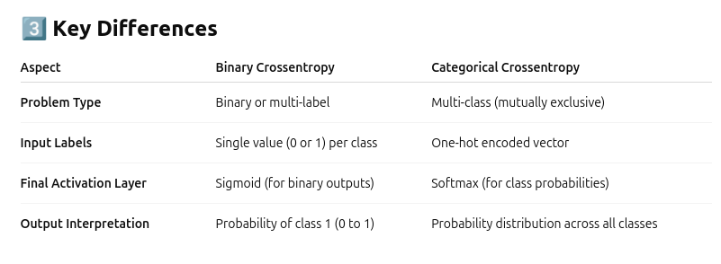
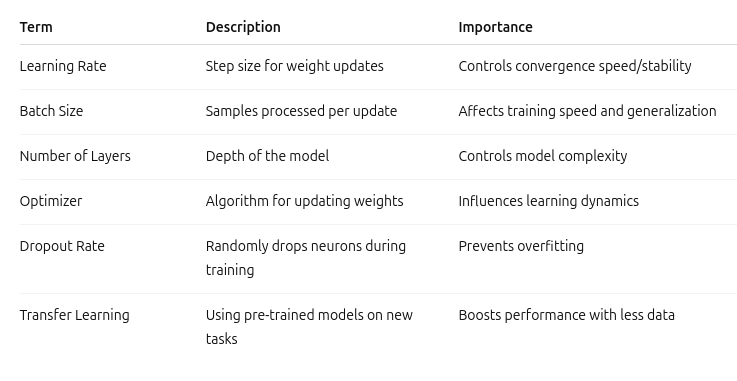
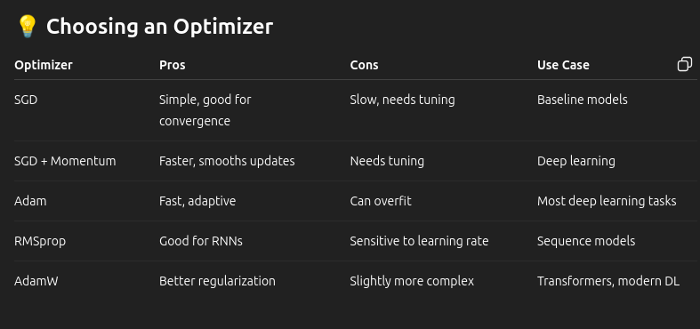

Machine learning: model training
Last updated on 2025-07-09 | Edit this page
Estimated time: 46 minutes
Overview
Questions
- What is required to train a machine learning model?
- How do I deal with bias in my dataset?
- How do I know if my model is training correctly?
- What are hyper parameters?
Objectives
- To learn all the aspect required to train a machine learning model.
- To use dataset configurations to deal with dataset bias.
- Learn about cross-validation training.
- To understand all the different hyper parameters and how to decided what configurations to select.
Training Machine learning models
Training a machine learning model is often considered the most difficult part for several reasons, many of which go beyond just running code. So far, we have covered the following:
Data Quality & Preparation (The Biggest Bottleneck)
Garbage In, Garbage Out: No matter how advanced your model, if the data is incomplete, noisy, biased, or inconsistent, the model will perform poorly.
Data Cleaning: Real-world data is messy. Handling missing values, duplicates, incorrect labels, or outliers is tedious and time-consuming.
Feature Engineering: Identifying which aspects of the data are relevant requires domain expertise and creativity. It’s often more impactful than tweaking algorithms.
Selecting the Right Model
- There’s no one-size-fits-all model. Choosing between decision trees, neural networks, support vector machines, etc.
- Understanding the benefit of certain model types compared to others.
Lets look at the distrabution
Q: Which type of model are you going to focus on (supervised/unsupervised)
A: results on board
Now in this section we are going to cover the actual process of training with more complex machine learning methods like deep learning and what aspects to pay attention to too. These include:
Dataset configuration
Evaluate the level of bias in your dataset (sampling methods, or class wieghts).
Constructing a reproducible training method (cross validation).
Loss functions and curves
- Striking the balance between over fitting and underfitting, which requires constant testing, validation, and sometimes redesigning the model or features.
Hyperparameter Tuning
- Most models have hyperparameters (e.g., learning rate, number of layers) that significantly affect performance.
- How to find the most optimal configuration (Trial and error, Grid search)
- This can be computationally expensive and time-consuming.
Compute Resources & Scalability
- Especially with deep learning or large datasets, training requires powerful GPUs/TPUs, distributed computing, or cloud resources.
- Managing these resources efficiently adds another layer of complexity.
Training is where all the complexity of creating a machine learning model converges: technical, mathematical, computational, and domain-specific. It’s not just about applying an algorithm; it’s about understanding the nuances of your data, selecting the right tools, balancing performance, and iterating continuously.
HPC resources
Q: Do you know of any HPC resources available to you? and when should you consider using them?
A: aberystwyth own HPC, Super computing wales. You should consider using these when you code takes reasonable amount of time, the good thing is these systems are scalable.
Dataset configuration
The first thing we need to consider is whether there’s any bias present in our training data. For discrete data, this could mean that one class is significantly more represented than others. In the case of continuous data, it might involve most data points being concentrated within a specific range of values.
These types of imbalances are easy to check. For discrete data, you can simply count the number of samples in each class. For continuous data, plotting a histogram of your target variable will reveal any uneven distributions.
You might wonder why this matters and, in some cases, it’s not a major issue. However, for certain approaches like deep learning, models often develop a bias toward the most common class, leading them to predict that class most of the time, regardless of the input.
An analogy for this is imagining a river flowing down a mountain. When the river meets a fork, most of the water will naturally flow down the wider or easier path following the path of least resistance. Similarly, if our data is imbalanced, the model tends to take the “easiest” option by favouring the dominant class, rather than truly learning to distinguish between different classes based on meaningful patterns.
To build a more balanced and well-rounded model, we need to correct for these imbalances. Two common strategies are:
- Resampling the Data — either by oversampling minority classes or under sampling the majority class
- Applying Class Weights — adjusting the model to penalize incorrect predictions more heavily for underrepresented classes
Both approaches aim to encourage the model to use the actual features for prediction, rather than being influenced by biased distributions in the training data.
Sampling methods
sampling methods in machine learning, which are essential for creating balanced, representative datasets, especially in classification problems, imbalanced datasets, or evaluation tasks like cross-validation.
Types of Sampling Methods in Machine Learning
- Random Sampling: Selects data points randomly from the dataset.
- Stratified Sampling: Ensures each class is proportionally represented in the sample.
- Systematic Sampling: Selects every k-th data point from the dataset.
- Cluster Sampling: Divides the dataset into clusters and randomly selects some clusters.
- Reservoir Sampling: Efficient method to sample k items from a very large or streaming dataset.
- Over-Sampling: Increases the number of samples in the minority class.
- Under-Sampling: Reduces the number of samples in the majority class.
- Bootstrapping: Samples with replacement. Used often in ensemble methods like bagging.
- Cross-Validation Sampling: Splits the data into multiple folds to validate models reliably.
Each method has its own benefit and disadvantages, therefore it’s important to do a lot of testing to work out which is the most optimal for your data type. The most common and is usually effective no matter what your data type is Under-Sampling. The main downside of this method is that you are removing samples, which means that you are restricting your model’s knowledge base. Let’s move on to our method, which doesn’t involve removing any data.
 .
.
(cite: https://www.scribbr.co.uk/research-methods/sampling/)
Stratified Sampling example
PYTHON
import pandas as pd
from sklearn import datasets
from sklearn.model_selection import train_test_split
iris = datasets.load_iris()
iris_df=pd.DataFrame(iris.data)
iris_df['class']=iris.target
iris_df.columns=['sepal_len', 'sepal_wid', 'petal_len', 'petal_wid', 'class']
iris_df['class'].value_counts()
y = iris_df["class"]
X = iris_df[iris_df.columns]
X_train, X_test, y_train, y_test= train_test_split(X,y, train_size=0.8, random_state=None,shuffle=True, stratify=y)
print("Class distribution of train set")
print(y_train.value_counts())
print()
print("Class distribution of test set")
print(y_test.value_counts())OUTPUT
Class distribution of train set
class
0 40
2 40
1 40
Name: count, dtype: int64
Class distribution of test set
class
1 10
2 10
0 10
Name: count, dtype: int64What Are Class Weights?
Class weights are numerical values assigned to different classes during model training to handle class imbalance, where one or more classes are significantly underrepresented compared to others.
In simple terms:
- The model is “told” that some classes are more important or costly to miss-classify.
- It increases the penalty for incorrect predictions on minority classes.
- This prevents the model from being biased toward the dominant class.
Why Use Class Weights?
In imbalanced datasets, if no adjustments are made:
- A model might predict the majority class most of the time and still appear to perform well (e.g., 95% accuracy might just mean it’s always predicting the dominant class).
- Minority classes get neglected, which is a problem for tasks like fraud detection, medical diagnosis, etc.
Class weights help by:
- Encouraging the model to “pay more attention” to rare classes
- Reducing bias toward the majority class
- Improving recall and precision for minority classes
How Class Weights Work (Conceptually)
During training:
- The loss function (more on the loss function later) calculates how wrong the model is.
- Class weights scale the loss differently for each class:
- Misclassifying a minority class → Higher penalty
- Misclassifying a majority class → Lower penalty
This nudges the optimization process to treat minority classes more seriously.
Example
Imagine a binary classification problem:
Class 0 = 90% of data
Class 1 = 10% of data Without class weights:
The model might always predict Class 0 to get high accuracy. With class weights:
Assign higher weight to Class 1: PYTHON
import numpy as np
from sklearn.utils.class_weight import compute_class_weight
y = [1, 1, 1, 1, 0, 0]
compute_class_weight(class_weight="balanced", classes=np.unique(y), y=y)OUTPUT
Out[14]: array([1.5 , 0.75])Cross validation
Cross-validation is a technique used to evaluate the performance of a machine learning model by splitting the data into multiple parts (folds), training on some and validating on the rest repeatedly. This helps ensure the model generalizes well to unseen data.
Why Use Cross-Validation?
- Prevents overfitting to a single train/test split.
- Gives a better estimate of model performance.
- Works especially well with limited datasets.
Common Types of Cross-Validation
- K-Fold Cross-Validation: Splits data into K equal folds.
- Stratified K-Fold: Like K-Fold but preserves class proportions in each fold.
- Leave-One-Out (LOO): Extreme case of K-Fold where K = N (number of samples).
- Repeated K-Fold: Repeats K-Fold CV multiple times with different splits.
 .
.
(cite: https://vitalflux.com/k-fold-cross-validation-python-example/)
PYTHON
import numpy as np
from sklearn import datasets
from sklearn.model_selection import KFold
# synthetic regression dataset
X, y = datasets.make_regression(
n_samples=10, n_features=1, n_informative=1,
noise=0, random_state=0)
# KFold split
kf = KFold(n_splits=4)
for i, (train_index, test_index) in enumerate(kf.split(X)):
print(f"Fold {i}:")
print(f" Training dataset index: {train_index}")
print(f" Test dataset index: {test_index}")OUTPUT
Fold 0:
Training dataset index: [3 4 5 6 7 8 9]
Test dataset index: [0 1 2]
Fold 1:
Training dataset index: [0 1 2 6 7 8 9]
Test dataset index: [3 4 5]
Fold 2:
Training dataset index: [0 1 2 3 4 5 8 9]
Test dataset index: [6 7]
Fold 3:
Training dataset index: [0 1 2 3 4 5 6 7]
Test dataset index: [8 9]Loss function
What is a Loss Function in Machine Learning?
A loss function (also called a cost function) is a mathematical function that measures the difference between the predicted output and the actual target value. It tells the model how wrong it is and is essential for the learning process and is variable tending on the type of task the model is performing. With the goal of training is to minimize the loss function.
Why Is It Important?
- Guides the model during training (via optimization, e.g., gradient descent).
- Helps compare performance between different models.
- Lower loss = better model (usually).
For Regression
MAE (Mean Absolute Error) and MSE (Mean Squared Error) are two commonly used metrics to evaluate the performance of regression models by measuring the difference between predicted values and actual values.
Mean Absolute Error (MAE)
Definition: MAE is the average of the absolute differences between predicted values and actual values.
Formula:
\(MAE = \frac{1}{n}\sum_{i = 1}^{n} ∣y_i − x_i∣\)
Where:
- \(n\) = number of data points
- \(x_i\)= actual value
- \(y_i\) = predicted value
PYTHON
from sklearn.metrics import mean_absolute_error
y_true = [3, -0.5, 2, 7]
y_pred = [2.5, 0.0, 2, 8]
mean_absolute_error(y_true, y_pred)
y_true = [[0.5, 1], [-1, 1], [7, -6]]
y_pred = [[0, 2], [-1, 2], [8, -5]]
mean_absolute_error(y_true, y_pred)
mean_absolute_error(y_true, y_pred, multioutput='raw_values')
mean_absolute_error(y_true, y_pred, multioutput=[0.3, 0.7])OUTPUT
Out[26]: 0.85Mean Squared Error (MSE)
Definition: MSE is the average of the squared differences between predicted values and actual values.
Formula: \(MAE = \frac{1}{n}\sum_{i = 1}^{n}(y_i − x_i)^2\) Where:
- \(n\) = number of data points
- \(x_i\)= actual value
- \(y_i\) = predicted value
PYTHON
from sklearn.metrics import mean_squared_error
y_true = [3, -0.5, 2, 7]
y_pred = [2.5, 0.0, 2, 8]
mean_squared_error(y_true, y_pred)
y_true = [[0.5, 1],[-1, 1],[7, -6]]
y_pred = [[0, 2],[-1, 2],[8, -5]]
mean_squared_error(y_true, y_pred)
mean_squared_error(y_true, y_pred, multioutput='raw_values')
mean_squared_error(y_true, y_pred, multioutput=[0.3, 0.7])OUTPUT
Out[28]: 0.825In summary,
- Use MAE if you want a metric that is more interpretable and less affected by outliers.
- Use MSE (or RMSE, its square root) if large errors are especially undesirable and need stronger penalization.
.
Binary Crossentropy (Log Loss)
When to Use: - For binary classification problems (two classes: 0 or 1) - Also works for multi-label classification where each label is treated independently
Formula:
For a single data point:
L=\(−(y*log(y^i)+(1−y)*log(1−y^i))\)
Where:
- \(y=\) actual label (0 or 1)
- \(y^i=\) predicted probability for class 1 (between 0 and 1)
Example Use Case:
- Spam detection (spam = 1, not spam = 0)
- Predicting disease presence (positive/negative)
Example:
Let’s say you have two data points:
- Point 1: True label (y) = 1, predicted probability (p) = 0.8
- Point 2: True label (y) = 0, predicted probability (p) = 0.3
- Point 1 loss: -(1 * log(0.8) + (1 - 1) * log(1 - 0.8)) = -log(0.8) ≈ 0.223
- Point 2 loss: -(0 * log(0.3) + (1 - 0) * log(1 - 0.3)) = -log(0.7) ≈ 0.357
Total loss: 0.223 + 0.357 = 0.58 Average loss: 0.58 / 2 = 0.29
PYTHON
from sklearn.metrics import log_loss
log_loss(["spam", "ham", "ham", "spam"],[[.1, .9], [.9, .1], [.8, .2], [.35, .65]])OUTPUT
0.21616Categorical Crossentropy
When to Use: - For multi-class classification problems (more than 2 classes) - Labels are one-hot encoded (e.g., for 3 classes: [1, 0, 0], [0, 1, 0], [0, 0, 1])
Formula:
L\(=−c\sum_{i = 1}^{n} yc ⋅log(y^c)\)
Where:
- \(C=\) number of classes
- \(yc=\) actual label (1 for correct class, 0 otherwise)
- \(y^c =\) predicted probability for class c (output of softmax)
Example Use Case:
- Image classification with multiple classes (e.g., cats, dogs, horses)
- Sentiment analysis with multiple categories (positive, neutral, negative)
PYTHON
import torch
from torch import nn
# Example of target with class indices
loss = nn.CrossEntropyLoss()
input = torch.randn(3, 5, requires_grad=True)
target = torch.empty(3, dtype=torch.long).random_(5)
print(target)
output = loss(input, target)
print(output)
output.backward()
# Example of target with class probabilities
input = torch.randn(3, 5, requires_grad=True)
target = torch.randn(3, 5).softmax(dim=1)
output = loss(input, target)
output.backward()OUTPUT
tensor([0, 1, 4])
tensor(1.5236, grad_fn=<NllLossBackward0>)
.
Summary
- Use Binary Crossentropy for 2-class problems or independent multi-label outputs
- Use Categorical Crossentropy for multi-class, one-hot encoded labels
- Use Sparse Categorical Crossentropy for multi-class problems with integer labels
Analysing loss curves
What Are Loss Curves?
Loss curves plot the model’s loss over time (typically per epoch) for:
- Training Loss: How well the model fits the training data
- Validation Loss: How well the model generalizes to unseen data
Goal:
- Steady decrease in training and validation loss, with minimal gap between them to avoid overfitting
Ideal Scenario
- Both training and validation loss decrease smoothly Validation loss stabilizes or slightly increases at the end
- Model is learning and generalizing well
 .
.
(cite: https://discuss.pytorch.org/t/plotting-loss-curve/42632)
 .
.
(cite:https://www.digilab.ai/)
Overfitting
- Training loss keeps decreasing
- Validation loss decreases initially, then starts increasing
Symptoms: - High accuracy on training data - Poor performance on validation/test data
Solutions:
- Early stopping
- Add dropout or regularization
- Reduce model complexity
- Data augmentation
 .
.
(cite:https://developers.google.com/machine-learning/crash-course/overfitting/interpreting-loss-curves)
Underfitting
- Both training and validation loss stay high
- Minimal improvement across epochs
Symptoms: - Model isn’t learning patterns well
Solutions:
- Increase model complexity (more layers/units)
- Train for more epochs
- Try a lower learning rate
- Change activation functions or optimizer
 .
.
(cite:https://developers.google.com/machine-learning/crash-course/overfitting/interpreting-loss-curves)
 .
.What is Hyperparameter Tuning?
Hyperparameters are settings defined before training that control the learning process and model structure.
- They are not learned from the data
- Must be set manually or via search strategies
- Tuning them properly can dramatically boost model performance
 .
.
As you can see the majority of machine learning models have some sort of hyperparameter that can be configured. Usually when you go and use these models they will have default parameters already coding into the functions, allowing you to train a model before delevin into the actual parameter refinement. Even then be prepared depending on your models training time hyper parameter selection can be a long process, but there are a few methods to speed it up.
 .
.
Traditional machine learning usually has very few hyper parameters compared to deep learning and therefore are normally quicker and easier. Lets have a focus of a deep learning and see what hyper parameters are required to run them.
 .
.
.
Lets focus on two important hyper parameters.
Learning rate
The learning rate is one of the most critical hyperparameters in training machine learning models, especially in gradient-based optimization (like with neural networks). It controls how much the model’s weights are updated during training in response to the calculated loss gradient. Here’s how it affects training: If the learning rate is too high:
- Overshooting: The model may skip over the optimal weights and never converge, or even diverge completely.
- Instability: The loss can fluctuate wildly and fail to decrease.
- Poor performance: May result in worse accuracy, even if the model initially improves quickly.
If the learning rate is too low:
- Slow convergence: Training takes a very long time, and you might waste compute resources.
- Getting stuck: The model can get trapped in local minima or plateaus and not make meaningful progress.
- Overfitting risk: More epochs might be needed, which can lead to overfitting if regularization isn’t strong enough.
Optimizer
A machine learning optimizer is an algorithm used to adjust the parameters (weights) of a machine learning model to minimize a loss function during training.The purpose of an optimizer is to find the set of model parameters that results in the best performance on your training data, typically by minimizing error or maximizing accuracy.
.
A detailed understanding of how optimizers work is beyond the scope of this course, so using SGD or Adam as a starting point is generally recommended.
Transfer Learning (The hero in the night)
Definition: Using a pre-trained model on a similar task and fine-tuning it for your specific task.
How it Works:
- Take a model trained on a large dataset (e.g., ImageNet for images)
- Keep learned weights (often in lower layers)
- Replace final layers for your task
- Optionally, fine-tune some or all layers
Benefits:
- Speeds up training
- Requires less labeled data
- Boosts performance on smaller datasets
Putting it all together examples
Classification example
PYTHON
import torch
import torchvision
import torchvision.transforms as transforms
transform = transforms.Compose(
[transforms.ToTensor(),
transforms.Normalize((0.5, 0.5, 0.5), (0.5, 0.5, 0.5))])
batch_size = 4
trainset = torchvision.datasets.CIFAR10(root='./data', train=True,
download=True, transform=transform)
trainloader = torch.utils.data.DataLoader(trainset, batch_size=batch_size,
shuffle=True, num_workers=2)
testset = torchvision.datasets.CIFAR10(root='./data', train=False,
download=True, transform=transform)
testloader = torch.utils.data.DataLoader(testset, batch_size=batch_size,
shuffle=False, num_workers=2)
classes = ('plane', 'car', 'bird', 'cat',
'deer', 'dog', 'frog', 'horse', 'ship', 'truck')
import matplotlib.pyplot as plt
import numpy as np
def imshow(img):
img = img / 2 + 0.5 # unnormalize
npimg = img.numpy()
plt.imshow(np.transpose(npimg, (1, 2, 0)))
plt.show()
# get some random training images
dataiter = iter(trainloader)
images, labels = next(dataiter)
# show images
imshow(torchvision.utils.make_grid(images))
# print labels
print(' '.join(f'{classes[labels[j]]:5s}' for j in range(batch_size)))
import torch.nn as nn
import torch.nn.functional as F
class Net(nn.Module):
def __init__(self):
super().__init__()
self.conv1 = nn.Conv2d(3, 6, 5)
self.pool = nn.MaxPool2d(2, 2)
self.conv2 = nn.Conv2d(6, 16, 5)
self.fc1 = nn.Linear(16 * 5 * 5, 120)
self.fc2 = nn.Linear(120, 84)
self.fc3 = nn.Linear(84, 10)
def forward(self, x):
x = self.pool(F.relu(self.conv1(x)))
x = self.pool(F.relu(self.conv2(x)))
x = torch.flatten(x, 1) # flatten all dimensions except batch
x = F.relu(self.fc1(x))
x = F.relu(self.fc2(x))
x = self.fc3(x)
return x
net = Net()
import torch.optim as optim
criterion = nn.CrossEntropyLoss()
optimizer = optim.SGD(net.parameters(), lr=0.001, momentum=0.9)
for epoch in range(5): # loop over the dataset multiple times
running_loss = 0.0
for i, data in enumerate(trainloader, 0):
# get the inputs; data is a list of [inputs, labels]
inputs, labels = data
# zero the parameter gradients
optimizer.zero_grad()
# forward + backward + optimize
outputs = net(inputs)
loss = criterion(outputs, labels)
loss.backward()
optimizer.step()
# print statistics
running_loss += loss.item()
if i % 2000 == 1999: # print every 2000 mini-batches
print(f'[{epoch + 1}, {i + 1:5d}] loss: {running_loss / 2000:.3f}')
running_loss = 0.0
print('Finished Training')
dataiter = iter(testloader)
images, labels = next(dataiter)
# print images
imshow(torchvision.utils.make_grid(images))
print('GroundTruth: ', ' '.join(f'{classes[labels[j]]:5s}' for j in range(4)))OUTPUT
car deer bird bird
[1, 2000] loss: 2.221
[1, 4000] loss: 1.841
[1, 6000] loss: 1.684
[1, 8000] loss: 1.575
[1, 10000] loss: 1.522
[1, 12000] loss: 1.490
[2, 2000] loss: 1.422
[2, 4000] loss: 1.401
[2, 6000] loss: 1.341
[2, 8000] loss: 1.356
[2, 10000] loss: 1.317
[2, 12000] loss: 1.308
[3, 2000] loss: 1.253
[3, 4000] loss: 1.232
[3, 6000] loss: 1.228
[3, 8000] loss: 1.194
[3, 10000] loss: 1.206
[3, 12000] loss: 1.205
[4, 2000] loss: 1.125
[4, 4000] loss: 1.118
[4, 6000] loss: 1.125
[4, 8000] loss: 1.151
[4, 10000] loss: 1.128
[4, 12000] loss: 1.114
[5, 2000] loss: 1.051
[5, 4000] loss: 1.053
[5, 6000] loss: 1.069
[5, 8000] loss: 1.047
[5, 10000] loss: 1.057
[5, 12000] loss: 1.073
Finished Training
GroundTruth: cat ship ship plane
Predicted: cat ship ship ship
Accuracy of the network on the 10000 test images: 59 %
Time series parameter example
data: https://drive.google.com/file/d/1CkL0_PEZwMFHz97sExRBluh_CYxwKqFr/view?usp=sharing
PYTHON
import matplotlib.pyplot as plt
import numpy as np
import pandas as pd
import torch
import torch.nn as nn
import torch.optim as optim
import torch.utils.data as data
df = pd.read_csv('AirPassengers.csv')
timeseries = df[["Passengers"]].values.astype('float32')
# train-test split for time series
train_size = int(len(timeseries) * 0.67)
test_size = len(timeseries) - train_size
train, test = timeseries[:train_size], timeseries[train_size:]
def create_dataset(dataset, lookback):
"""Transform a time series into a prediction dataset
Args:
dataset: A numpy array of time series, first dimension is the time steps
lookback: Size of window for prediction
"""
X, y = [], []
for i in range(len(dataset)-lookback):
feature = dataset[i:i+lookback]
target = dataset[i+1:i+lookback+1]
X.append(feature)
y.append(target)
return torch.tensor(X), torch.tensor(y)
lookback = 4
X_train, y_train = create_dataset(train, lookback=lookback)
X_test, y_test = create_dataset(test, lookback=lookback)
class AirModel(nn.Module):
def __init__(self):
super().__init__()
self.lstm = nn.LSTM(input_size=1, hidden_size=50, num_layers=1, batch_first=True)
self.linear = nn.Linear(50, 1)
def forward(self, x):
x, _ = self.lstm(x)
x = self.linear(x)
return x
model = AirModel()
optimizer = optim.Adam(model.parameters())
loss_fn = nn.MSELoss()
loader = data.DataLoader(data.TensorDataset(X_train, y_train), shuffle=True, batch_size=8)
n_epochs = 2000
for epoch in range(n_epochs):
model.train()
for X_batch, y_batch in loader:
y_pred = model(X_batch)
loss = loss_fn(y_pred, y_batch)
optimizer.zero_grad()
loss.backward()
optimizer.step()
# Validation
if epoch % 100 != 0:
continue
model.eval()
with torch.no_grad():
y_pred = model(X_train)
train_rmse = np.sqrt(loss_fn(y_pred, y_train))
y_pred = model(X_test)
test_rmse = np.sqrt(loss_fn(y_pred, y_test))
print("Epoch %d: train RMSE %.4f, test RMSE %.4f" % (epoch, train_rmse, test_rmse))
with torch.no_grad():
# shift train predictions for plotting
train_plot = np.ones_like(timeseries) * np.nan
y_pred = model(X_train)
y_pred = y_pred[:, -1, :]
train_plot[lookback:train_size] = model(X_train)[:, -1, :]
# shift test predictions for plotting
test_plot = np.ones_like(timeseries) * np.nan
test_plot[train_size+lookback:len(timeseries)] = model(X_test)[:, -1, :]
# plot
plt.plot(timeseries)
plt.plot(train_plot, c='r')
plt.plot(test_plot, c='g')
plt.show()OUTPUT
/home/corcor27/Documents/time_series_example.py:66: DeprecationWarning: __array_wrap__ must accept context and return_scalar arguments (positionally) in the future. (Deprecated NumPy 2.0)
train_rmse = np.sqrt(loss_fn(y_pred, y_train))
/home/corcor27/Documents/time_series_example.py:68: DeprecationWarning: __array_wrap__ must accept context and return_scalar arguments (positionally) in the future. (Deprecated NumPy 2.0)
test_rmse = np.sqrt(loss_fn(y_pred, y_test))
Epoch 0: train RMSE 226.0555, test RMSE 425.2918
Epoch 100: train RMSE 180.3027, test RMSE 377.3510
Epoch 200: train RMSE 145.4659, test RMSE 339.4402
Epoch 300: train RMSE 116.3985, test RMSE 305.5107
Epoch 400: train RMSE 94.1039, test RMSE 275.5995
Epoch 500: train RMSE 72.6241, test RMSE 244.1789
Epoch 600: train RMSE 56.9958, test RMSE 215.7754
Epoch 700: train RMSE 45.2195, test RMSE 190.4163
Epoch 800: train RMSE 37.3441, test RMSE 168.7669
Epoch 900: train RMSE 31.8818, test RMSE 150.3023
Epoch 1000: train RMSE 28.1362, test RMSE 134.6788
Epoch 1100: train RMSE 25.6366, test RMSE 121.9030
Epoch 1200: train RMSE 24.1227, test RMSE 110.8427
Epoch 1300: train RMSE 23.1641, test RMSE 102.8851
Epoch 1400: train RMSE 22.0363, test RMSE 96.8792
Epoch 1500: train RMSE 21.3094, test RMSE 90.6086
Epoch 1600: train RMSE 20.6500, test RMSE 86.9244
Epoch 1700: train RMSE 20.8895, test RMSE 83.7368
Epoch 1800: train RMSE 20.1709, test RMSE 82.1835
Epoch 1900: train RMSE 19.8376, test RMSE 80.0266
/home/corcor27/Documents/time_series_example.py:76: DeprecationWarning: __array__ implementation doesn't accept a copy keyword, so passing copy=False failed. __array__ must implement 'dtype' and 'copy' keyword arguments.
train_plot[lookback:train_size] = model(X_train)[:, -1, :]
/home/corcor27/Documents/time_series_example.py:79: DeprecationWarning: __array__ implementation doesn't accept a copy keyword, so passing copy=False failed. __array__ must implement 'dtype' and 'copy' keyword arguments.
test_plot[train_size+lookback:len(timeseries)] = model(X_test)[:, -1, :]
Parameter estimation example
PYTHON
import matplotlib.pyplot as plt
import numpy as np
import pandas as pd
import torch
import torch.nn as nn
import torch.optim as optim
import tqdm
from sklearn.model_selection import train_test_split
from sklearn.datasets import fetch_california_housing
from sklearn.preprocessing import StandardScaler
# Read data
data = fetch_california_housing()
X, y = data.data, data.target
# train-test split for model evaluation
X_train_raw, X_test_raw, y_train, y_test = train_test_split(X, y, train_size=0.7, shuffle=True)
# Standardizing data
scaler = StandardScaler()
scaler.fit(X_train_raw)
X_train = scaler.transform(X_train_raw)
X_test = scaler.transform(X_test_raw)
# Convert to 2D PyTorch tensors
X_train = torch.tensor(X_train, dtype=torch.float32)
y_train = torch.tensor(y_train, dtype=torch.float32).reshape(-1, 1)
X_test = torch.tensor(X_test, dtype=torch.float32)
y_test = torch.tensor(y_test, dtype=torch.float32).reshape(-1, 1)
# Define the model
model = nn.Sequential(
nn.Linear(8, 24),
nn.ReLU(),
nn.Linear(24, 12),
nn.ReLU(),
nn.Linear(12, 6),
nn.ReLU(),
nn.Linear(6, 1)
)
# loss function and optimizer
loss_fn = nn.MSELoss() # mean square error
optimizer = optim.Adam(model.parameters(), lr=0.0001)
n_epochs = 20 # number of epochs to run
batch_size = 10 # size of each batch
batch_start = torch.arange(0, len(X_train), batch_size)
# Hold the best model
best_mse = np.inf # init to infinity
best_weights = None
history = []
for epoch in range(n_epochs):
model.train()
print(epoch)
with tqdm.tqdm(batch_start, unit="batch", mininterval=0, disable=True) as bar:
bar.set_description(f"Epoch {epoch}")
for start in bar:
# take a batch
X_batch = X_train[start:start+batch_size]
y_batch = y_train[start:start+batch_size]
# forward pass
y_pred = model(X_batch)
loss = loss_fn(y_pred, y_batch)
# backward pass
optimizer.zero_grad()
loss.backward()
# update weights
optimizer.step()
# print progress
bar.set_postfix(mse=float(loss))
# evaluate accuracy at end of each epoch
model.eval()
y_pred = model(X_test)
mse = loss_fn(y_pred, y_test)
mse = float(mse)
history.append(mse)
if mse < best_mse:
best_mse = mse
# restore model and return best accuracy
#model.load_state_dict(best_weights)
print("MSE: %.2f" % best_mse)
print("RMSE: %.2f" % np.sqrt(best_mse))
plt.plot(history)
plt.show()
model.eval()
with torch.no_grad():
# Test out inference with 5 samples
for i in range(5):
X_sample = X_test_raw[i: i+1]
X_sample = scaler.transform(X_sample)
X_sample = torch.tensor(X_sample, dtype=torch.float32)
y_pred = model(X_sample)
print(f"{X_test_raw[i]} -> {y_pred[0].numpy()} (expected {y_test[i].numpy()})")OUTPUT
0
1
2
3
4
5
6
7
8
9
10
11
12
13
14
15
16
17
18
19
MSE: 0.39
RMSE: 0.63
[ 3.3214 47. 4.91287879 1.10606061 704.
2.66666667 33.96 -118.32 ] -> [2.4658601] (expected [1.665])
[ 2.2019 24. 4.96732026 1.09477124 882.
2.88235294 37.07 -120.84 ] -> [1.0679097] (expected [1.])
[ 3.5128 23. 5.17777778 0.95061728 911.
2.24938272 36.74 -119.69 ] -> [1.26838] (expected [1.216])
[ 5.70180000e+00 2.40000000e+01 6.49022556e+00 1.01954887e+00
2.28600000e+03 3.43759398e+00 3.38300000e+01 -1.18050000e+02] -> [2.6457143] (expected [2.867])
[ 3.5781 35. 6.24624625 1.0960961 1026.
3.08108108 36.62 -119.73 ] -> [1.273118] (expected [0.928])